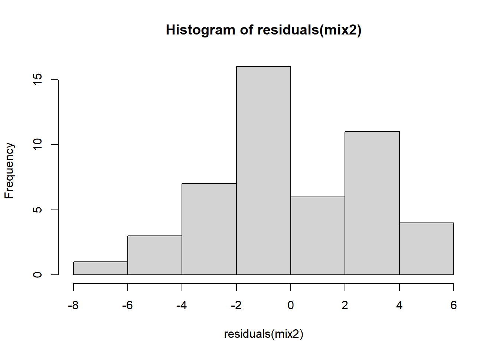
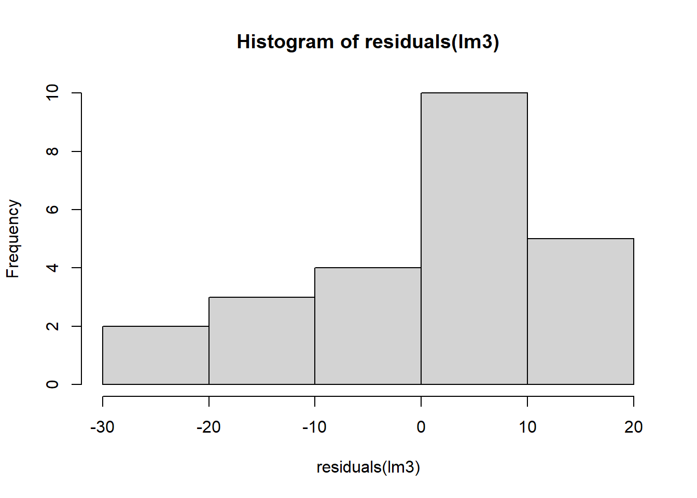

library(gsheet)
library(tidyverse)
library(lme4)
library(performance)
library(DHARMa)
library(emmeans)
library(multcomp)
library(r4pde)
library(drc)
library(stats)Experimento fatorial e ajuste de modelos - Análise de correlação
Durante a aula 9, vão ser estudados dados que levam a entender melhor os Experimento fatorial e ajuste de modelos.
Pacotes carregados
Importando dados
milho <- gsheet2tbl("https://docs.google.com/spreadsheets/d/1bq2N19DcZdtax2fQW9OHSGMR0X2__Z9T/edit#gid=1345524759")Análise de um experimento em parcelas subdivididas
Experimentos em parcelas subdivididas são utilizados quando o nível de um fator primário (ou tratamento) é aplicado a uma parcela relativamente grande e todos os níveis de um segundo fator secundário são aplicados às subparcelas desta parcela maior. Os tratamentos primários são distribuídos às parcelas de acordo com um delineamento especificado, já os tratamentos secundários são distribuídos às subparcelas de forma aleatória.
visualização dos dados
milho |>
ggplot(aes(method,index))+
geom_jitter(which = 0.1, alpha = 0.2)+
facet_wrap(~ hybrid)+
stat_summary(fun.data = "mean_cl_boot", size = 0.5, color = "blue")
##Dependendo do híbrido parece que há efeito do métodoModelo para parcela subdividida
milho <- milho |>
mutate(block = as.factor(block))
mix2 <- lmer(index ~ hybrid*method + block + (1|block/hybrid),
data = milho)
#No fator aleatório, colocamos o hibrido dentro do bloco. ( 1 | block/hybrid); Comparamos os híbridos nas linhas e os métodos nas colunas.ANOVA MIX2
anova (mix2)Analysis of Variance Table
npar Sum Sq Mean Sq F value
hybrid 5 262.548 52.510 3.1194
method 1 79.053 79.053 4.6963
block 3 3.630 1.210 0.0719
hybrid:method 5 266.064 53.213 3.1612Verificação das premissas
check_normality(mix2)OK: residuals appear as normally distributed (p = 0.635).check_heteroscedasticity(mix2)Warning: Heteroscedasticity (non-constant error variance) detected (p = 0.009).plot(simulateResiduals(mix2))
qqnorm(residuals(mix2))
qqline(residuals(mix2))
hist(residuals(mix2))
Conclui-se que os dados seguem distribuição normal. Porém, não há homogeneidade de variância entre os grupos. Logo será preciso uma alternativa para prosseguir a análise, por exemplo a transformação dos dados com raiz quadrada.
Depois de carregar o Emmeans:
medias_milho <- emmeans(mix2,
~ hybrid | method,
type = "response")
medias_milhomethod = pin:
hybrid emmean SE df lower.CL upper.CL
30F53 HX 25.3 8.13 1022 9.32 41.2
30F53 YH 24.6 8.13 1022 8.64 40.6
30K64 20.6 8.13 1022 4.59 36.5
30S31H 38.1 8.13 1022 22.14 54.1
30S31YH 32.5 8.13 1022 16.54 48.5
BG7049H 19.4 8.13 1022 3.49 35.4
method = silk:
hybrid emmean SE df lower.CL upper.CL
30F53 HX 25.0 8.13 1022 9.04 41.0
30F53 YH 26.2 8.13 1022 10.29 42.2
30K64 21.5 8.13 1022 5.54 37.5
30S31H 26.5 8.13 1022 10.54 42.5
30S31YH 26.6 8.13 1022 10.69 42.6
BG7049H 19.2 8.13 1022 3.22 35.1
Results are averaged over the levels of: block
Degrees-of-freedom method: kenward-roger
Confidence level used: 0.95 medias_milho2 <- emmeans(mix2,
~ method | hybrid,
type = "response")
medias_milho2hybrid = 30F53 HX:
method emmean SE df lower.CL upper.CL
pin 25.3 8.13 1022 9.32 41.2
silk 25.0 8.13 1022 9.04 41.0
hybrid = 30F53 YH:
method emmean SE df lower.CL upper.CL
pin 24.6 8.13 1022 8.64 40.6
silk 26.2 8.13 1022 10.29 42.2
hybrid = 30K64:
method emmean SE df lower.CL upper.CL
pin 20.6 8.13 1022 4.59 36.5
silk 21.5 8.13 1022 5.54 37.5
hybrid = 30S31H:
method emmean SE df lower.CL upper.CL
pin 38.1 8.13 1022 22.14 54.1
silk 26.5 8.13 1022 10.54 42.5
hybrid = 30S31YH:
method emmean SE df lower.CL upper.CL
pin 32.5 8.13 1022 16.54 48.5
silk 26.6 8.13 1022 10.69 42.6
hybrid = BG7049H:
method emmean SE df lower.CL upper.CL
pin 19.4 8.13 1022 3.49 35.4
silk 19.2 8.13 1022 3.22 35.1
Results are averaged over the levels of: block
Degrees-of-freedom method: kenward-roger
Confidence level used: 0.95 cld(medias_milho2, Letters = LETTERS)hybrid = 30F53 HX:
method emmean SE df lower.CL upper.CL .group
silk 25.0 8.13 1022 9.04 41.0 A
pin 25.3 8.13 1022 9.32 41.2 A
hybrid = 30F53 YH:
method emmean SE df lower.CL upper.CL .group
pin 24.6 8.13 1022 8.64 40.6 A
silk 26.2 8.13 1022 10.29 42.2 A
hybrid = 30K64:
method emmean SE df lower.CL upper.CL .group
pin 20.6 8.13 1022 4.59 36.5 A
silk 21.5 8.13 1022 5.54 37.5 A
hybrid = 30S31H:
method emmean SE df lower.CL upper.CL .group
silk 26.5 8.13 1022 10.54 42.5 A
pin 38.1 8.13 1022 22.14 54.1 B
hybrid = 30S31YH:
method emmean SE df lower.CL upper.CL .group
silk 26.6 8.13 1022 10.69 42.6 A
pin 32.5 8.13 1022 16.54 48.5 A
hybrid = BG7049H:
method emmean SE df lower.CL upper.CL .group
silk 19.2 8.13 1022 3.22 35.1 A
pin 19.4 8.13 1022 3.49 35.4 A
Results are averaged over the levels of: block
Degrees-of-freedom method: kenward-roger
Confidence level used: 0.95
significance level used: alpha = 0.05
NOTE: If two or more means share the same grouping symbol,
then we cannot show them to be different.
But we also did not show them to be the same. A significância da anova ou efeitos da interação; Realiza-se o teste de médias se há efeito; Comparamos a diferença dentro dos métodos, e depois, comparamos a diferença entre os métodos dentro dos híbridos.
Produtividade (yield)
Seguindo os mesmos procedimentos para o índice de doença, será conduzida avaliação da produtividade.
mix3 <- lmer(sqrt(index) ~ hybrid*method + block + (1|block/hybrid), data = milho)ANOVA MIX3
anova (mix3)Analysis of Variance Table
npar Sum Sq Mean Sq F value
hybrid 5 2.14415 0.42883 3.0632
method 1 0.54438 0.54438 3.8886
block 3 0.01004 0.00335 0.0239
hybrid:method 5 1.87331 0.37466 2.6762Verificação das premissas
check_normality(mix3)OK: residuals appear as normally distributed (p = 0.440).check_heteroscedasticity(mix3)OK: Error variance appears to be homoscedastic (p = 0.971).Regressão linear
Usada para modelar e analisar a relação entre uma variável dependente (também chamada de variável resposta) e uma ou mais variáveis independentes (também chamadas de variáveis preditoras). O objetivo da regressão linear é ajustar uma linha reta (ou um plano, no caso de múltiplas variáveis) aos dados que minimiza a soma dos quadrados dos resíduos (a diferença entre os valores observados e os valores previstos pelo modelo).
Importando dados
estande <- gsheet2tbl("https://docs.google.com/spreadsheets/d/1bq2N19DcZdtax2fQW9OHSGMR0X2__Z9T/edit#gid=401662555")visualização dos dados
estande |>
ggplot(aes(trat, nplants))+
geom_jitter(which = 0.1, alpha = 0.3)+
facet_wrap(~ exp)+
stat_summary(fun.data = "mean_cl_boot", size = 0.5, color = "black")+
geom_smooth(method = "lm", se = F) #Mostramos biologicamente que há redução do estande de plantas conforme o aumento da inoculação do patógeno. podemos assumir dois modelos: linear simples ou quadrático. Podemos verificar qual modelo se adequa melhor à regressão.Experimento 1:
exp1 <- estande |>
filter(exp == 1)
exp1 |>
ggplot(aes(trat, nplants))+
geom_point()+
geom_smooth(se = F)
#MODELO LINEAR
lm1 = lm(nplants ~ trat,
data = exp1)
summary (lm1)
Call:
lm(formula = nplants ~ trat, data = exp1)
Residuals:
Min 1Q Median 3Q Max
-25.500 -6.532 1.758 8.573 27.226
Coefficients:
Estimate Std. Error t value Pr(>|t|)
(Intercept) 52.5000 4.2044 12.487 1.84e-11 ***
trat -0.2419 0.1859 -1.301 0.207
---
Signif. codes: 0 '***' 0.001 '**' 0.01 '*' 0.05 '.' 0.1 ' ' 1
Residual standard error: 15 on 22 degrees of freedom
Multiple R-squared: 0.07148, Adjusted R-squared: 0.02928
F-statistic: 1.694 on 1 and 22 DF, p-value: 0.2066Experimento 2:
exp2 <- estande |>
filter(exp == 2)
exp2 |>
ggplot(aes(trat, nplants))+
geom_point()+
geom_smooth(se = F, method = "lm",
formula = y~poly(x,2),
color = "red")+
geom_smooth(method = "lm", se = FALSE)#Modelo de primeira ordem
lm2 <- lm(nplants~trat,
data = exp2)
summary(lm2)
Call:
lm(formula = nplants ~ trat, data = exp2)
Residuals:
Min 1Q Median 3Q Max
-25.7816 -7.7150 0.5653 8.1929 19.2184
Coefficients:
Estimate Std. Error t value Pr(>|t|)
(Intercept) 60.9857 3.6304 16.798 4.93e-14 ***
trat -0.7007 0.1605 -4.365 0.000247 ***
---
Signif. codes: 0 '***' 0.001 '**' 0.01 '*' 0.05 '.' 0.1 ' ' 1
Residual standard error: 12.95 on 22 degrees of freedom
Multiple R-squared: 0.4641, Adjusted R-squared: 0.4398
F-statistic: 19.05 on 1 and 22 DF, p-value: 0.0002473hist(residuals(lm2))
# Nodelo de segunda ordem
exp2$trat2 <- exp2$trat^2Experimento 3:
exp3 <- estande |>
filter(exp == 3)
exp3 |>
ggplot(aes(trat, nplants))+
geom_point()+
geom_smooth(se = F) #method = "lm")
lm3 <- lm(nplants~trat + trat2,
data = exp2)
summary(lm3)
Call:
lm(formula = nplants ~ trat + trat2, data = exp2)
Residuals:
Min 1Q Median 3Q Max
-25.439 -6.019 1.789 8.016 19.561
Coefficients:
Estimate Std. Error t value Pr(>|t|)
(Intercept) 66.30156 4.42097 14.997 1.08e-12 ***
trat -1.77720 0.58467 -3.040 0.00623 **
trat2 0.02223 0.01166 1.906 0.07036 .
---
Signif. codes: 0 '***' 0.001 '**' 0.01 '*' 0.05 '.' 0.1 ' ' 1
Residual standard error: 12.24 on 21 degrees of freedom
Multiple R-squared: 0.5432, Adjusted R-squared: 0.4997
F-statistic: 12.49 on 2 and 21 DF, p-value: 0.0002675hist(residuals(lm3))
Comparação de modelos diferente usando os mesmos dados
Usando GLM
Podemos atribuir o glm com distribuição normal ou distribuição de poisson (considerando que a distribuição não é normal).
#glm2 <- glm(nplants ~ trat, family = gaussian, data = exp2)
#summary(glm2)
#AIC(glm2)
glm2b <- glm(nplants ~ trat, family = "poisson", data = exp2)
summary(glm2b)
Call:
glm(formula = nplants ~ trat, family = "poisson", data = exp2)
Coefficients:
Estimate Std. Error z value Pr(>|z|)
(Intercept) 4.134189 0.037583 110.003 < 2e-16 ***
trat -0.016270 0.002059 -7.901 2.76e-15 ***
---
Signif. codes: 0 '***' 0.001 '**' 0.01 '*' 0.05 '.' 0.1 ' ' 1
(Dispersion parameter for poisson family taken to be 1)
Null deviance: 139.783 on 23 degrees of freedom
Residual deviance: 69.578 on 22 degrees of freedom
AIC: 210.24
Number of Fisher Scoring iterations: 4glm2b <- glm(nplants ~ trat, family = poisson(link = "log"),
data = exp2)
summary(glm2b)
Call:
glm(formula = nplants ~ trat, family = poisson(link = "log"),
data = exp2)
Coefficients:
Estimate Std. Error z value Pr(>|z|)
(Intercept) 4.134189 0.037583 110.003 < 2e-16 ***
trat -0.016270 0.002059 -7.901 2.76e-15 ***
---
Signif. codes: 0 '***' 0.001 '**' 0.01 '*' 0.05 '.' 0.1 ' ' 1
(Dispersion parameter for poisson family taken to be 1)
Null deviance: 139.783 on 23 degrees of freedom
Residual deviance: 69.578 on 22 degrees of freedom
AIC: 210.24
Number of Fisher Scoring iterations: 4AIC(glm2b)[1] 210.2353Análise de múltiplos ensaios
Com múltiplos ensaios, é possível analisá-los individualmente para observar uma tendência geral no comportamento dos tratamentos. No entanto, existem outras alternativas, como aplicar um modelo de regressão linear global ou extrair a informação global utilizando modelos mistos. Nesse caso, os ensaios são tratados como fator aleatório, ou seja, advêm de uma distribuição (população), e o objetivo é estimar os parâmetros para essa população. Para exemplificar esse caso, um conjunto de dados (WhiteMoldSoybean) presente no pacote r4pde será importado, mas antes o pacote deverá ser carregado. AIC menor é o melhor modelo ajustado.
wm <- WhiteMoldSoybean
wm |>
ggplot(aes(inc, yld))+
geom_point()+
facet_wrap(~ study)+
theme_minimal()+
geom_smooth(method = "lm", se = F)
#Predizer uma resposta em relação à outra. Duas respostas numéricas contínuas, ajustanto o modelo linear ou não. Muitos estudos diferentes, gráfico geral. A saída dos gráficos mostra que com a ação do fungicida e redução da severidade acontece um incremento de produtividade da soja.mofo1 <- lm(yld ~ inc,
data = wm)
#intercepto pordutividade quando a incidencia é zero, inc é o slope com 10% de incidencia esta perdendo 90kg.
summary(mofo1)
Call:
lm(formula = yld ~ inc, data = wm)
Residuals:
Min 1Q Median 3Q Max
-1657.85 -594.50 -91.32 531.76 1693.15
Coefficients:
Estimate Std. Error t value Pr(>|t|)
(Intercept) 3299.619 56.451 58.451 < 2e-16 ***
inc -9.261 2.108 -4.393 1.45e-05 ***
---
Signif. codes: 0 '***' 0.001 '**' 0.01 '*' 0.05 '.' 0.1 ' ' 1
Residual standard error: 745.8 on 380 degrees of freedom
Multiple R-squared: 0.04833, Adjusted R-squared: 0.04582
F-statistic: 19.3 on 1 and 380 DF, p-value: 1.452e-05#O 3299 é a produtividade por ha quando não há controle. O 9,261 indica a redução de produtividade em kg/ha de acordo com o aumento da severidade.Modelo linear por ensaio
Agrupando todos os estudos em um único gráfico.
Mofo 1
wm |>
ggplot(aes(inc, yld, group = factor(study)))+
geom_point()+
#facet_wrap(~ study)+
theme_minimal()+
geom_smooth(method = "lm", se = F)mofo1 <- lm(yld ~ inc,
data = wm)
summary(mofo1)
Call:
lm(formula = yld ~ inc, data = wm)
Residuals:
Min 1Q Median 3Q Max
-1657.85 -594.50 -91.32 531.76 1693.15
Coefficients:
Estimate Std. Error t value Pr(>|t|)
(Intercept) 3299.619 56.451 58.451 < 2e-16 ***
inc -9.261 2.108 -4.393 1.45e-05 ***
---
Signif. codes: 0 '***' 0.001 '**' 0.01 '*' 0.05 '.' 0.1 ' ' 1
Residual standard error: 745.8 on 380 degrees of freedom
Multiple R-squared: 0.04833, Adjusted R-squared: 0.04582
F-statistic: 19.3 on 1 and 380 DF, p-value: 1.452e-05#Código muito importante para agrupar vários experimentos. Já detalha as médias para cada variável resposta.Mofo 2
library(broom)
mofo2 <- wm |>
group_by(study) |>
do(tidy(lm(.$yld ~ .$inc), conf.int = TRUE))
mofo2# A tibble: 70 × 8
# Groups: study [35]
study term estimate std.error statistic p.value conf.low conf.high
<dbl> <chr> <dbl> <dbl> <dbl> <dbl> <dbl> <dbl>
1 1 (Intercept) 3329. 86.8 38.3 4.60e-13 3138. 3520.
2 1 .$inc -14.2 2.08 -6.85 2.78e- 5 -18.8 -9.64
3 2 (Intercept) 2682. 48.6 55.2 8.55e-15 2575. 2789.
4 2 .$inc -6.93 1.49 -4.66 6.89e- 4 -10.2 -3.66
5 3 (Intercept) 4017. 61.6 65.2 1.37e-15 3882. 4153.
6 3 .$inc -18.6 1.71 -10.9 3.11e- 7 -22.4 -14.9
7 4 (Intercept) 2814. 151. 18.6 1.15e- 9 2481. 3147.
8 4 .$inc -43.5 16.8 -2.58 2.56e- 2 -80.5 -6.38
9 5 (Intercept) 3317. 234. 14.2 2.07e- 8 2802. 3832.
10 5 .$inc -21.2 5.69 -3.72 3.36e- 3 -33.7 -8.67
# ℹ 60 more rowsdf<- mofo2 |>
filter(term == ".$inc")
mean(df$estimate)[1] -19.52932#Histograma da produtividade quando incidência é 0
library(cowplot)
p1 <- mofo2 |>
filter(term == "(Intercept)") |>
ggplot(aes(x = estimate))+
geom_histogram(bins = 8, color = "white", fill = "gray")+
theme_r4pde()+
labs(x = "Intercept", y = "frequency")
p2 <- mofo2 |>
filter(term == ".$inc") |>
ggplot(aes(x = estimate))+
geom_histogram(bins = 8, color = "white", fill = "gray")+
theme_r4pde()+
labs(x = "Slopes", y = "frequency")
library(patchwork)
p1+p2
Mofo 3
Modelo misto
#Modelo misto
mofo3 <- lmer(yld ~ inc + (inc | study), data = wm,
REML = F)
summary(mofo3)Linear mixed model fit by maximum likelihood ['lmerMod']
Formula: yld ~ inc + (inc | study)
Data: wm
AIC BIC logLik deviance df.resid
5319.4 5343.1 -2653.7 5307.4 376
Scaled residuals:
Min 1Q Median 3Q Max
-3.7078 -0.5991 -0.0295 0.5077 3.2364
Random effects:
Groups Name Variance Std.Dev. Corr
study (Intercept) 557573.08 746.708
inc 36.85 6.071 -0.29
Residual 37228.73 192.947
Number of obs: 382, groups: study, 35
Fixed effects:
Estimate Std. Error t value
(Intercept) 3455.432 128.063 26.98
inc -17.236 1.451 -11.88
Correlation of Fixed Effects:
(Intr)
inc -0.300
optimizer (nloptwrap) convergence code: 0 (OK)
Model failed to converge with max|grad| = 0.416806 (tol = 0.002, component 1)library(lme4)
mofo3 <- lmer(yld ~ inc + (inc|study), data = wm, REML = F)
summary(mofo3)Linear mixed model fit by maximum likelihood ['lmerMod']
Formula: yld ~ inc + (inc | study)
Data: wm
AIC BIC logLik deviance df.resid
5319.4 5343.1 -2653.7 5307.4 376
Scaled residuals:
Min 1Q Median 3Q Max
-3.7078 -0.5991 -0.0295 0.5077 3.2364
Random effects:
Groups Name Variance Std.Dev. Corr
study (Intercept) 557573.08 746.708
inc 36.85 6.071 -0.29
Residual 37228.73 192.947
Number of obs: 382, groups: study, 35
Fixed effects:
Estimate Std. Error t value
(Intercept) 3455.432 128.063 26.98
inc -17.236 1.451 -11.88
Correlation of Fixed Effects:
(Intr)
inc -0.300
optimizer (nloptwrap) convergence code: 0 (OK)
Model failed to converge with max|grad| = 0.416806 (tol = 0.002, component 1)wm <- WhiteMoldSoybean
wm |>
ggplot(aes(inc, yld)) +
geom_point() +
#facet_wrap(~ study) +
theme_minimal() +
geom_smooth(method = 'lm', se = T)
mofo1 <- lm(yld ~ inc, data = wm)
summary(mofo1)
Call:
lm(formula = yld ~ inc, data = wm)
Residuals:
Min 1Q Median 3Q Max
-1657.85 -594.50 -91.32 531.76 1693.15
Coefficients:
Estimate Std. Error t value Pr(>|t|)
(Intercept) 3299.619 56.451 58.451 < 2e-16 ***
inc -9.261 2.108 -4.393 1.45e-05 ***
---
Signif. codes: 0 '***' 0.001 '**' 0.01 '*' 0.05 '.' 0.1 ' ' 1
Residual standard error: 745.8 on 380 degrees of freedom
Multiple R-squared: 0.04833, Adjusted R-squared: 0.04582
F-statistic: 19.3 on 1 and 380 DF, p-value: 1.452e-05wm <- WhiteMoldSoybean
wm |>
ggplot(aes(inc, yld))+
geom_point()+
facet_wrap(~ study)+
theme_minimal()+
geom_smooth(method = "lm", se = F)
#Predizer uma resposta em relação à outra. Duas respostas numéricas contínuas, ajustanto o modelo linear ou não. Muitos estudos diferentes, gráfico geral. A saída dos gráficos mostra que com a ação do fungicida e redução da severidade acontece um incremento de produtividade da soja.mofo1 <- lmer(yld ~ inc + (inc|study), data = wm, REML = F)
summary(mofo3)Linear mixed model fit by maximum likelihood ['lmerMod']
Formula: yld ~ inc + (inc | study)
Data: wm
AIC BIC logLik deviance df.resid
5319.4 5343.1 -2653.7 5307.4 376
Scaled residuals:
Min 1Q Median 3Q Max
-3.7078 -0.5991 -0.0295 0.5077 3.2364
Random effects:
Groups Name Variance Std.Dev. Corr
study (Intercept) 557573.08 746.708
inc 36.85 6.071 -0.29
Residual 37228.73 192.947
Number of obs: 382, groups: study, 35
Fixed effects:
Estimate Std. Error t value
(Intercept) 3455.432 128.063 26.98
inc -17.236 1.451 -11.88
Correlation of Fixed Effects:
(Intr)
inc -0.300
optimizer (nloptwrap) convergence code: 0 (OK)
Model failed to converge with max|grad| = 0.416806 (tol = 0.002, component 1)confint(mofo3, method = "Wald") 2.5 % 97.5 %
.sig01 NA NA
.sig02 NA NA
.sig03 NA NA
.sigma NA NA
(Intercept) 3204.43403 3706.43096
inc -20.08046 -14.39219Aula 10 - 29/05
Análise de correlação
Pacotes carregados
#pacotes
library(tidyverse)
library(patchwork)
library(AgroR)
library(corrplot)Importando dados
imgs <- gsheet2tbl("https://docs.google.com/spreadsheets/d/1bq2N19DcZdtax2fQW9OHSGMR0X2__Z9T/edit#gid=373270992")r2: coeficiente de determinação o quento da variação de y explicada pelo x;
Coenficiente de correlação: a força de associação entre x e y;
Análise preeliminar dos dados.
imgs1 <- imgs|>
ggplot(aes(Assess, LeafDoctor))+
geom_point()+ geom_smooth(method = "lm")imgs2 <- imgs|>
ggplot(aes(Assess, ImageJ))+
geom_point()+geom_smooth(method = "lm")imgs3 <- imgs |>
ggplot(aes(LeafDoctor, ImageJ))+
geom_point()+geom_smooth(method = "lm")imgs1 + imgs2 + imgs3
Utilizando o AgroR
#matriz de correlação
imgs2 <- imgs |>
dplyr::select(3:5)
corgraph(imgs2) Var1 Var2 cor p
2 LeafDoctor Assess 0.9666367 5.972544e-42
3 ImageJ Assess 0.9776918 8.143613e-48
6 ImageJ LeafDoctor 0.9797478 3.144091e-49
Matriz de correlação Cor entrega o coeficiente de correlação de pearson. O cor test da uma estatística mais completa. O valor observado 0,98 é bem próximo de um, então indica uma correlação forte. Quanto maior a correlação menor o p-valor, se os dados forem mais dispersos o p-valor vai ser maior e não vai ser significativo. O corgraph é um pacote que indica a correlação entre as respostas da análise. Os valores dentro da matriz irão indicar o coeficiente de correlação entre as varíaveis observadas.
cor.test(imgs$Assess, imgs$LeafDoctor)
Pearson's product-moment correlation
data: imgs$Assess and imgs$LeafDoctor
t = 31.119, df = 68, p-value < 2.2e-16
alternative hypothesis: true correlation is not equal to 0
95 percent confidence interval:
0.9466882 0.9792005
sample estimates:
cor
0.9666367 cor(imgs$Assess, imgs$LeafDoctor)[1] 0.9666367cor_imgs2 <- cor(imgs2)
corrplot(cor_imgs2, method = "number", type = "upper")
Importando dados
campo <- gsheet2tbl("https://docs.google.com/spreadsheets/d/1bq2N19DcZdtax2fQW9OHSGMR0X2__Z9T/edit#gid=866852711")campo2 <- campo |>
dplyr::select(DFC, FER, PROD)
corgraph(campo2) Var1 Var2 cor p
2 FER DFC 0.9316978 9.864101e-15
3 PROD DFC -0.6928161 1.110652e-05
6 PROD FER -0.6258321 1.277444e-04
campo |>
ggplot(aes(DFC, PROD))+
geom_jitter()#O modelo quadratico é um experimento melhor do que o de primeira ordem, explica melhor o que vemos no gráfico anterior e a variação dos desvios. Pode ser utilizado essa variação, predizer o numero de plantas afetadas. y = (66,3 - 1,77trat) + (0,02trat^2) : equação do modeloImportando dados
estande <- gsheet2tbl("https://docs.google.com/spreadsheets/d/1bq2N19DcZdtax2fQW9OHSGMR0X2__Z9T/edit#gid=401662555")estande |>
ggplot(aes(trat, nplants, color = factor (exp))) +
geom_boxplot() +
facet_wrap(~ exp) +
theme_bw() +
stat_summary(fun.data = "mean_cl_boot", size = 0.5,
color = "black")estande |>
ggplot(aes(trat, nplants, color = factor (exp))) +
geom_jitter(width = 0.1, alpha = 0.2) +
facet_wrap(~exp) +
theme_bw() +
stat_summary(fun.data = "mean_cl_boot", size = 0.5,
color = "black") +
geom_smooth(method = "lm", se = F)exp2 <- estande |>
filter (exp == 2)
exp2 |>
ggplot(aes(trat, nplants)) +
geom_point() +
ylim(0,100) +
geom_smooth(method = "lm", se = F, formula = y ~poly(x,2), color = "black") +
geom_smooth(method = "lm",
se = FALSE)
#MODELO LINEAR
exp2$trat2 <- exp2$trat^2
#primeira ordem
lm2 <- lm(nplants ~ trat,
data = exp2)
summary(lm2)
Call:
lm(formula = nplants ~ trat, data = exp2)
Residuals:
Min 1Q Median 3Q Max
-25.7816 -7.7150 0.5653 8.1929 19.2184
Coefficients:
Estimate Std. Error t value Pr(>|t|)
(Intercept) 60.9857 3.6304 16.798 4.93e-14 ***
trat -0.7007 0.1605 -4.365 0.000247 ***
---
Signif. codes: 0 '***' 0.001 '**' 0.01 '*' 0.05 '.' 0.1 ' ' 1
Residual standard error: 12.95 on 22 degrees of freedom
Multiple R-squared: 0.4641, Adjusted R-squared: 0.4398
F-statistic: 19.05 on 1 and 22 DF, p-value: 0.0002473hist(residuals(lm2))
#segunda ordem
lm3 <- lm(nplants ~ trat + trat2,
data = exp2)
summary(lm3)
Call:
lm(formula = nplants ~ trat + trat2, data = exp2)
Residuals:
Min 1Q Median 3Q Max
-25.439 -6.019 1.789 8.016 19.561
Coefficients:
Estimate Std. Error t value Pr(>|t|)
(Intercept) 66.30156 4.42097 14.997 1.08e-12 ***
trat -1.77720 0.58467 -3.040 0.00623 **
trat2 0.02223 0.01166 1.906 0.07036 .
---
Signif. codes: 0 '***' 0.001 '**' 0.01 '*' 0.05 '.' 0.1 ' ' 1
Residual standard error: 12.24 on 21 degrees of freedom
Multiple R-squared: 0.5432, Adjusted R-squared: 0.4997
F-statistic: 12.49 on 2 and 21 DF, p-value: 0.0002675hist(residuals(lm3))
AIC(lm2)[1] 194.9597AIC(lm3)[1] 193.1284library(AgroR)
with(exp2, polynomial(trat, nplants, grau = 3))
----------------------------------------------------
Regression Models
----------------------------------------------------
Estimate Std. Error t value Pr(>|t|)
(Intercept) 70.265143802 5.300440019 13.256474 2.295186e-11
trat -3.609380523 1.514625525 -2.383018 2.720299e-02
I(trat^2) 0.140522077 0.091192577 1.540938 1.390058e-01
I(trat^3) -0.001712445 0.001309648 -1.307561 2.058546e-01
----------------------------------------------------
Deviations from regression
----------------------------------------------------
Df SSq MSQ F p-value
Linear 1 3196.2031 3196.2031 21.8232929 0.0001899378
Quadratic 1 544.5029 544.5029 3.7178008 0.0697619482
Cubic 1 247.7520 247.7520 1.6916208 0.2097934169
Deviation 2 261.9170 130.9585 0.8941691 0.4263523326
Residual 18 2636.2500 146.4583 [[1]]Importando dados
pyra <- gsheet2tbl("https://docs.google.com/spreadsheets/d/1bq2N19DcZdtax2fQW9OHSGMR0X2__Z9T/edit#gid=465348652")pyra2 <- pyra |>
group_by(code, dose) |>
summarise(mean_germination = mean(germination))
pyra2 |>
ggplot(aes(dose, mean_germination))+
geom_point()+
facet_wrap(~code)
pyra2 <- pyra |>
group_by(code, dose) |>
summarise(mean_germination = mean(germination))
library(drc)
isolado186 <- pyra2 |>
filter(code == "186")
drc1 <- drm(mean_germination ~ dose, data = isolado186,
fct = LL.3())
AIC(drc1)[1] 21.11219plot(drc1)
ED(drc1, 50, interval = "delta")
Estimated effective doses
Estimate Std. Error Lower Upper
e:1:50 0.579757 0.013332 0.537328 0.622187summary(drc1)
Model fitted: Log-logistic (ED50 as parameter) with lower limit at 0 (3 parms)
Parameter estimates:
Estimate Std. Error t-value p-value
b:(Intercept) 4.997636 0.542650 9.2097 0.002708 **
d:(Intercept) 48.750109 0.721642 67.5545 7.148e-06 ***
e:(Intercept) 0.579757 0.013332 43.4853 2.677e-05 ***
---
Signif. codes: 0 '***' 0.001 '**' 0.01 '*' 0.05 '.' 0.1 ' ' 1
Residual standard error:
1.020525 (3 degrees of freedom)Usando o pacote ec50estimator
Faz tudo isso que foi feito anteriormente para todos os códigos.
library(ec50estimator)
df_ec50 <- estimate_EC50(mean_germination ~ dose,
data = pyra2,
isolate_col = "code",
interval = "delta",
fct = drc::LL.3())Gráfico com as doses de EC50 e intervalo de confiança:
df_ec50 |>
ggplot(aes(reorder(ID, Estimate), Estimate))+
geom_point()+
geom_errorbar(aes(ymin = Lower,
ymax = Upper),
width = 0.1)+
ylim (0, 1.2)+
coord_flip()